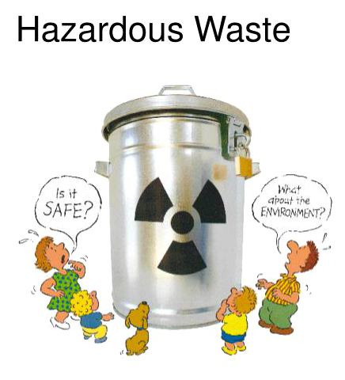

Medical waste disposal is one of the biggest day-to-day challenges faced by healthcare providers. It's often complicated by other concerns like HIPAA, epidemiology, potential civil litigation, and state and local regulation. Because at MedPro Waste Disposal we aim to help providers become better providers, we're taking a look at the key concepts around medical waste.
Definition of Bio-Medical Waste
Medical waste is any kind of waste that contains infectious material (or material that's potentially infectious). This definition includes waste generated by healthcare facilities like physician's offices, hospitals, dental practices, laboratories, medical research facilities, and veterinary clinics.
Medical waste can contain bodily fluids like blood or other contaminants. The 1988 Medical Waste Tracking Act defines is as waste generated during medical research, testing, diagnosis, immunization, or treatment of either human beings or animals. Some examples are culture dishes, glassware, bandages, gloves, discarded sharps like needles or scalpels, swabs, and tissue.

Medical Waste Types:
The term medical waste can cover a wide variety of different byproducts of the healthcare industry. The broadest definition can include office paper and hospital sweeping waste. The list below displays the most common waste categories as identified by the WHO.
Sharps. This kind of waste includes anything that can pierce the skin, including needles, scalpels, lancets, broken glass, razors, ampules, staples, wires, and trocars.
Infectious Waste. Anything infectious or potentially infectious goes in this category, including swabs, tissues, excreta, equipment, and lab cultures.
Radioactive. This kind of waste generally means unused radiotherapy liquid or lab research liquid. It can also consist of any glassware or other supplies contaminated with this liquid.
Pathological. Human fluids, tissue, blood, body parts, bodily fluids, and contaminated animal carcasses come under this waste category.
Pharmaceuticals. This grouping includes all unused, expired, and/or contaminated vaccines and drugs. It also encompasses antibiotics, injectables, and pills.
Chemical. These are disinfectants, solvents used for laboratory purposes, batteries, and heavy metals from medical equipment such as mercury from broken thermometers.
Genotoxic Waste. This is a highly hazardous form of medical waste that's either carcinogenic, teratogenic, or mutagenic. It can include cytotoxic drugs intended for use in cancer treatment.
General Non-Regulated Medical Waste. Also called non-hazardous waste, this type does not pose any particular chemical, biological, physical, or radioactive danger.
The benifits of biomedical progress are obvious, clear and powerful. But the hazards are much less well apreiciated. So it's time to rethink about this issue to save us from the big hazardous disasters awaiting us.